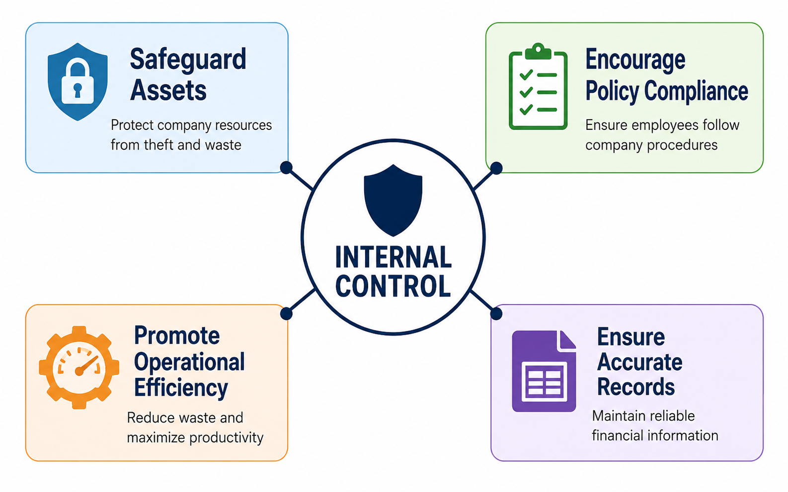
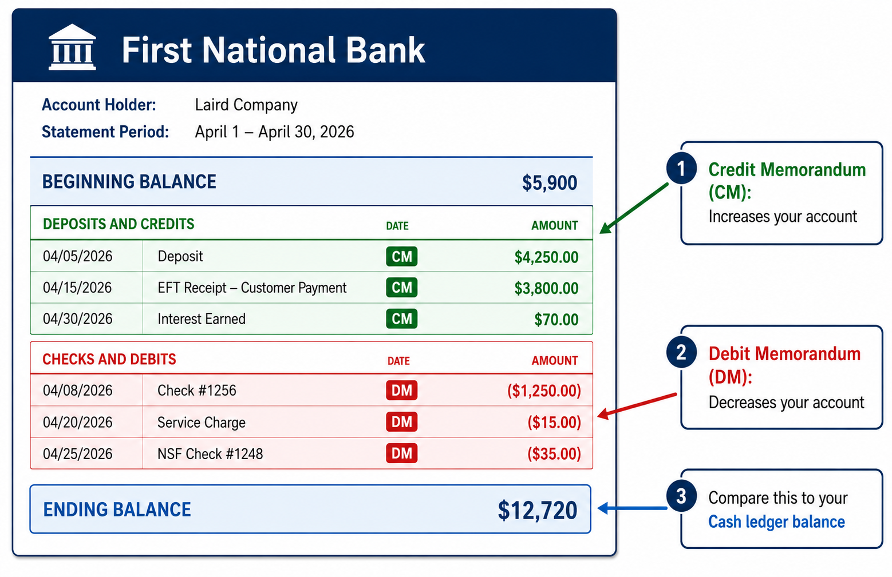
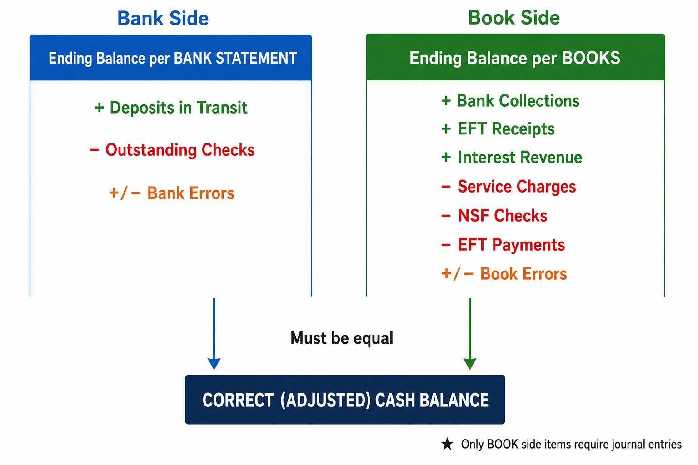
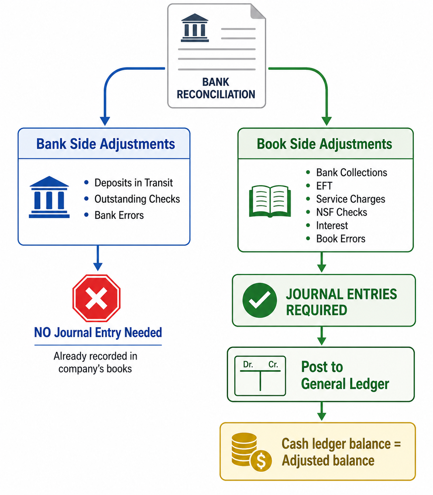

Safeguarding Assets and Reconciling the Bank Account
Learning Objectives
Define internal control and describe the components of internal control and control procedures.
Apply internal controls to cash receipts.
Apply internal controls to cash payments.
Demonstrate the use of a bank account as a control device and prepare a bank reconciliation along with its related journal entries.
Imagine you are a manager responsible for overseeing a company's daily operations. Employees handle cash, process payments, and record transactions every day. How do you ensure that no money goes missing, that every transaction is recorded accurately, and that your financial statements reflect reality? The answer lies in internal control—the organizational plan and all the related measures a company adopts to protect its assets and ensure the integrity of its accounting records.
In this chapter, we begin by examining the framework of internal control and then apply these principles to the asset that matters most: cash. Cash is the most liquid asset on the balance sheet and the ultimate goal of every business operation. Because cash is easy to conceal and relatively easy to steal, businesses must implement strong controls over how it is received, stored, and disbursed. The chapter culminates with one of the most practical accounting tools you will learn in this course: the bank reconciliation.
📹 Video lectures for this chapter (1 video · 22 topics)
Each link opens the lecture video at that topic. Timestamps are approximate — a topic may begin a few seconds before or after the mark, so step back a little if you land mid-sentence.
Internal Control — The organizational plan and all the related measures adopted by an entity to (1) safeguard assets, (2) encourage employees to follow company policies, (3) promote operational efficiency, and (4) ensure accurate and reliable accounting records.
Every business, regardless of size, needs internal control. Owners set goals and hire managers and employees to carry out the business plan. Without a system of checks and balances, there is no way to ensure that everyone is working toward the same objectives or that the company's resources are being used properly.
The Four Objectives of Internal Control
1. Safeguard Assets
A company must protect its assets; otherwise, it is throwing away resources. If you fail to safeguard cash, the most liquid of assets, it will quickly slip away.
2. Encourage Compliance with Policies
Everyone in an organization needs to work toward the same goals. Company policies ensure that all customers are treated consistently and that results can be measured effectively.
3. Promote Operational Efficiency
Businesses cannot afford to waste resources. Promoting efficiency reduces expenses and increases profits.
4. Ensure Accurate, Reliable Records
Without reliable records, managers cannot tell which part of the business is profitable and which part needs improvement.

Figure 7-2 — The Four Objectives of Internal Control
💡 THINK ABOUT IT
Why do we study internal control in an accounting course? Because the accounting system is itself a critical internal control. Accurate, reliable accounting records serve as the foundation for every financial decision a company makes. Internal control is not just about preventing fraud—it is about ensuring that the numbers managers rely on are trustworthy.
Because cash is the most liquid asset and therefore the most vulnerable to theft, companies apply the principles of internal control specifically to cash receipts and cash payments. The details are straightforward and well-explained in your textbook, but the overriding principle is worth highlighting here: separation of duties.
No single employee should have complete control over any cash transaction from start to finish. The person who handles cash should not be the same person who records it in the accounting system. The person who approves a payment should not be the same person who signs the check. By dividing responsibilities among multiple people, the company ensures that one person's work serves as a check on another's. This is arguably the single most important principle of internal control.
3. The Bank Account as a Control Device
The use of a bank account contributes significantly to good internal control over cash for two key reasons: it minimizes the amount of currency on hand (reducing the risk of theft), and it creates a double record of every transaction—one in the company's books and one in the bank's records. This double record provides an independent check on the accuracy of the company's accounting, and the process of comparing these two records is the bank reconciliation we will study shortly.
Bank Statement — A document from the bank that reports the activity in a customer's account. It shows the account's beginning and ending balances and lists the month's cash transactions conducted through the bank account.
When you receive the bank statement at the end of the month, you will often see two important types of memorandums:
Credit Memorandum (+)
Increases your bank account balance. From the bank's perspective, your deposit account is a liability (the bank owes you money), so an increase is recorded as a credit.
Collection of notes receivable
Interest earned on the account
EFT receipts
Debit Memorandum (−)
Decreases your bank account balance. Since your account is a liability to the bank, a decrease is recorded as a debit.
Bank service charges
NSF (bounced) checks
Check printing costs
EFT payments

Figure 7-3 — Anatomy of a Bank Statement
💡 THINK ABOUT IT
The terms "debit memorandum" and "credit memorandum" can be confusing because they are from the bank's perspective, not yours. When the bank says "credit memorandum," it means they increased your account—which is good for you. When they say "debit memorandum," they decreased your account. Always think: credit memo = more cash for you; debit memo = less cash for you.
Bank Reconciliation — A document that explains the reasons for the differences between a company's cash records and the bank's records. It compares and reconciles the two balances to arrive at the correct (true) cash balance.
At the end of each accounting period, after posting all journal entries, the company's Cash ledger account shows an ending balance. The bank statement also shows an ending balance. Ideally, these two numbers should be identical. In practice, however, they almost never agree, for two primary reasons:
Timing differences: Some transactions have been recorded by one party but not yet by the other due to processing delays.
Errors: Either the company or the bank (or both) may have made a mistake.
📖 EXAMPLE — A Timing Difference
Suppose on December 31, one of your employees takes the day's cash receipts to the bank. However, they arrive after 4:00 PM when the bank has already closed. The company has already recorded this cash in its books, but the bank statement will not reflect the deposit. Your book balance includes this money; the bank balance does not. This is a classic deposit in transit—a timing difference that the bank reconciliation resolves.
The bank reconciliation is divided into two sides: the Bank side and the Book side. Each side starts with its respective ending balance and makes adjustments to arrive at the same corrected cash balance.
The Bank side begins with the ending balance per the bank statement. From this starting point, you add or subtract items to arrive at the corrected cash balance.
The key principle of the Bank side is this: you are adjusting for items that the company has already recorded correctly, but the bank has not yet processed. These are purely timing differences—the bank's records are temporarily behind, and the reconciliation updates them to reflect reality.
Bank Side Adjustments
+ AddDeposits in Transit Cash receipts the company has recorded and deposited, but the bank has not yet cleared.
− SubtractOutstanding Checks Checks the company has written and deducted from its books, but the payees have not yet presented to the bank for payment.
+/− AdjustBank Errors Mistakes made by the bank (e.g., crediting a deposit to the wrong account, transposing digits). Correct these on the Bank side and notify the bank immediately.
🔑 KEY TERM
Deposits in Transit (Outstanding Deposits) — Cash deposits that the company has recorded and sent to the bank, but which have not yet been processed and added to the bank's records.
Outstanding Checks — Checks that the company has issued and recorded as cash payments, but which have not yet been presented to the bank for payment by the payee.
The Book side begins with the ending cash balance per the company's books—the balance in the Cash T-account before any reconciliation adjustments.
The key principle of the Book side is the opposite of the Bank side: you are adjusting for items that the bank has already processed, but the company has not yet recorded. The company did not know about these transactions until it received the bank statement.
Book Side Adjustments
+ AddBank Collections Notes receivable, accounts receivable, or other items the bank collected on the company's behalf and credited to the account.
+ AddEFT Receipts Electronic funds transfers received from customers that the company has not yet recorded.
+ AddInterest Revenue Interest earned on the checking account, as reported on the bank statement.
− SubtractService Charges Fees the bank charged for processing transactions, maintaining the account, or printing checks.
− SubtractNSF Checks Customer checks that bounced because the customer's account had insufficient funds.
− SubtractEFT Payments Electronic payments the bank made on the company's behalf (e.g., utility bills) that the company has not yet recorded.
+/− AdjustBook Errors Mistakes the company made in its own records (e.g., transposing digits when recording a check amount).
🔑 KEY TERM
NSF (Non-Sufficient Funds) Check — A check received from a customer that the bank cannot process because the customer's account does not have enough money to cover the amount. Also called a "bounced," "bad," or "hot" check. When a check bounces, the company must subtract the amount from its cash balance and reclassify it as an Account Receivable, because the customer still owes the money.
Electronic Funds Transfer (EFT) — A system that transfers cash by electronic communication rather than by paper documents. EFTs can be either receipts (cash in) or payments (cash out). Debit card transactions and direct deposits are common examples.
The following diagram summarizes the complete bank reconciliation structure. Both sides must arrive at the same correct (adjusted) cash balance.

Figure 7-1 — Bank Reconciliation Framework
💡 THINK ABOUT IT
Here is a simple way to remember which items go on which side: Ask yourself, "Who already knows about this transaction?" If the company already recorded it but the bank has not, it goes on the Bank side (deposits in transit, outstanding checks). If the bank already processed it but the company has not recorded it, it goes on the Book side (collections, service charges, NSF checks, EFTs). Errors go on the side that made the mistake.
Both sides arrive at $12,204.85—the true, corrected cash balance. The reconciliation is successful.
📖 EXAMPLE — Understanding the Book Error
Laird Company wrote Check No. 443 for $1,226 to pay a supplier. The bank correctly processed $1,226. However, the company's accountant made a transposition error and recorded the payment as $1,262 in the books. The company subtracted $36 too much from its Cash account. To fix this, we add $36 back to the book balance. Think of it this way: the company thought it paid more than it actually did, so we need to restore that extra amount.
Now we arrive at one of the most important questions in bank reconciliation: Which side requires journal entries?
⚠ CRITICAL RULE
Only the Book side requires journal entries.
The Bank side adjustments (deposits in transit and outstanding checks) represent transactions the company has already recorded. No new journal entry is needed.
The Book side adjustments represent transactions the company has not yet recorded. Simply writing them on the reconciliation form does not update the general ledger—formal journal entries are required.
💡 THINK ABOUT IT
Why doesn't the Bank side need journal entries? Consider deposits in transit: the company already debited Cash when it recorded the deposit. The money just hasn't cleared the bank yet. Recording it again would be double-counting. The same logic applies to outstanding checks—the company already credited Cash when it wrote the check. These items are on the reconciliation only to explain the temporary difference between the two balances, not to trigger new entries.

Figure 7-4 — Which Reconciliation Items Require Journal Entries?
Let us prepare the journal entries for each Book side adjustment in the Laird Company example.
Entry 1: Collection of Note Receivable
The bank collected a $1,000 note plus $50 in interest on Laird's behalf. The bank charged a $15 collection fee. The net amount credited to Laird's account was $1,035.
Apr. 30
Cash1,035
Miscellaneous Expense15
Notes Receivable1,000
Interest Revenue50
To record bank collection of note receivable, interest earned, and collection fee.
Check No. 443 was a payment to a supplier (Accounts Payable). The company recorded $1,262 instead of the correct $1,226, subtracting $36 too much from Cash. We must restore the $36 and reinstate the corresponding liability.
A customer's check for $425.60 bounced. The company originally recorded this as a cash receipt, but the money was never actually collected. We must remove the false cash and recognize that the customer still owes the money.
Apr. 30
Accounts Receivable425.60
Cash425.60
To record NSF check; customer's obligation is reinstated as an account receivable.
Entry 4: Bank Service Charge
The bank charged a $30 service fee, which the company did not know about until it received the bank statement.
Apr. 30
Miscellaneous Expense30
Cash30
To record bank service charge.
Verification: Posting to the Cash T-Account
After posting all four journal entries to the Cash T-account, the ending balance in the ledger should equal the adjusted book balance from the bank reconciliation:
Cash T-Account
Debit
Credit
Beginning balance (unadjusted)
$11,589.45
Note collection
1,035.00
Error correction
36.00
NSF check
$425.60
Service charge
30.00
Ending balance (adjusted)
$12,204.85
The adjusted Cash ledger balance of $12,204.85 matches the adjusted bank balance. The company's records are now complete and accurate.
11. Review and Practice
📖 REVIEW QUESTION
Which reconciling item in a bank reconciliation will result in an adjusting entry by the depositor?
(a) Outstanding checks (b) Deposit in transit (c) A bank error (d) Bank service charges
Answer: (d) Bank service charges. Items (a), (b), and (c) all appear on the Bank side of the reconciliation. The company has already recorded these transactions—only the bank has not yet processed them. Bank service charges, however, appear on the Book side because the company did not know about them until receiving the bank statement. Therefore, a journal entry is required to record the expense and reduce the Cash balance.
Practice: Linen Kist Fabrics
Sally Kist owns Linen Kist Fabrics. She encounters the following reconciling items and needs to determine how each should be treated on the bank reconciliation:
Reconciling Item
Which Side?
Add or Subtract?
(1) Debit memorandum for an NSF check
Book side
Subtract from book balance
(2) Credit memorandum for a note collected by the bank
Book side
Add to book balance
(3) Outstanding checks
Bank side
Subtract from bank balance
(4) Deposit in transit
Bank side
Add to bank balance
Remember the key question: "Who already knows about this transaction?" Items (1) and (2) are things the bank already processed but the company has not yet recorded—they go on the Book side and require journal entries. Items (3) and (4) are things the company has already recorded but the bank has not yet processed—they go on the Bank side and do not require journal entries.
12. Why the Bank Reconciliation Matters
The bank reconciliation is far more than a routine clerical task. It serves several critical functions:
Determines the true cash balance. Neither the book balance nor the bank balance is "correct" on its own. The reconciliation process identifies the adjustments needed on both sides to arrive at the true amount of cash the company actually has available.
Detects errors. The process forces you to compare every transaction in the company's records against the bank statement, making it very difficult for errors to go unnoticed.
Reveals unauthorized transactions. If someone forges a check or makes an unauthorized withdrawal, the reconciliation process is likely to uncover it.
Ensures financial statement accuracy. The cash balance reported on the balance sheet should be the adjusted balance after reconciliation—not the raw book balance or the bank statement balance.
💡 THINK ABOUT IT
The bank reconciliation is an internal control tool. It ties directly back to the principles we discussed at the beginning of this chapter. By requiring a formal reconciliation, the company ensures that its most important asset—cash—is accurately recorded and properly safeguarded. This is why the bank reconciliation is typically performed by someone who does not handle cash or record cash transactions (another application of separation of duties).
Chapter Summary
Internal control is the organizational plan and all related measures to safeguard assets, encourage policy compliance, promote efficiency, and ensure reliable records.
The four objectives of internal control are: safeguard assets, encourage compliance, promote efficiency, and ensure accurate records.
Separation of duties is the most fundamental internal control principle: no single employee should control a transaction from start to finish.
A bank account is itself an internal control device because it minimizes cash on hand and creates a double record of every transaction.
A bank reconciliation explains the differences between the company's cash balance and the bank's balance. It has two sides: the Bank side (adjusts for deposits in transit, outstanding checks, and bank errors) and the Book side (adjusts for bank collections, EFTs, service charges, NSF checks, interest revenue, and book errors).
Only the Book side adjustments require journal entries, because these represent transactions the company has not yet recorded.
After posting all reconciliation journal entries, the Cash ledger balance equals the adjusted bank balance—the true cash balance.
Key Terms
Internal Control
The organizational plan and all related measures adopted by an entity to safeguard assets, encourage policy compliance, promote operational efficiency, and ensure accurate, reliable accounting records.
Bank Statement
A document from the bank that reports the activity in a customer's account, showing beginning and ending balances and all transactions for the period.
Bank Reconciliation
A document that explains and resolves the differences between the company's Cash ledger balance and the bank statement balance.
Deposits in Transit
Cash deposits that the company has recorded and sent to the bank but that have not yet appeared on the bank statement.
Outstanding Checks
Checks the company has written and recorded as payments but that have not yet been presented to the bank for payment.
Credit Memorandum
A bank document indicating an increase in the customer's account (from the bank's perspective). Examples include note collections and interest earned.
Debit Memorandum
A bank document indicating a decrease in the customer's account (from the bank's perspective). Examples include service charges and NSF checks.
NSF Check
A check received from a customer that cannot be processed because the customer's bank account has insufficient funds. Also called a bounced or bad check.
Electronic Funds Transfer (EFT)
A system that transfers cash electronically rather than through paper documents. Includes direct deposits, debit card transactions, and electronic bill payments.
Maker
The party who issues (writes) a check.
Payee
The individual or business to whom a check is paid.